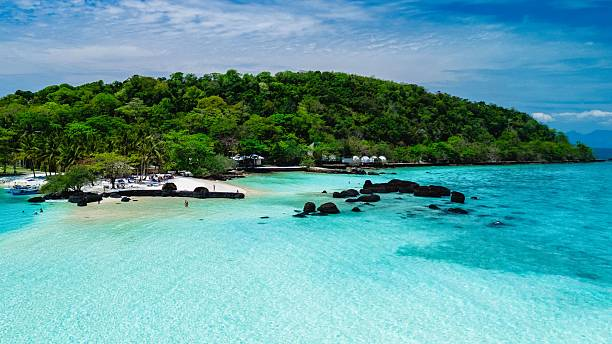

Missä on käyty ja mitä vielä käymättä

Phuket
Valkoisia hiekkarantoja ja yöelämää.

Krabi
Kalkkikivikallioita, rauhallisia rantoja ja laguuneita.

Koh Chang
Auringonlaskuja ja rauhaa trooppisen luonnon sylissä.
Koh Samui
Palmurantoja ja luksusresortteja.